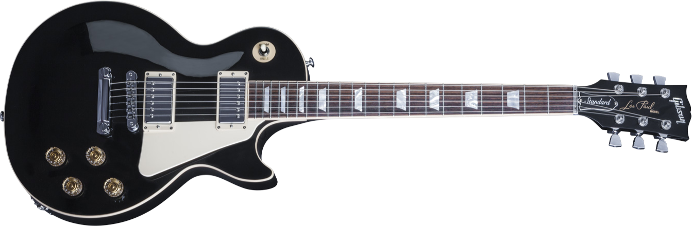

The Gibson "Les Paul" Standard
The Gibson Les Paul is a solid body electric guitar that was first sold by the Gibson Guitar Corporation in 1952. The Les Paul was designed by Gibson president Ted McCarty, factory manager John Huis and their team, along with guitarist/inventor Les Paul. The Les Paul was originally offered with a gold finish and two P-90 pickups. In 1957, humbucking pickups were added, along with sunburst finishes in 1958. The sunburst 1958–1960 Les Paul – today one of the best-known electric guitar types in the world – was considered a failure, with low production and sales. For 1961, the Les Paul was redesigned into what is now known as the Gibson SG. This design continued until 1963 but continued as a separate guitar, when the traditional single cutaway, carved top bodystyle was re-introduced. The Les Paul has been continually produced in countless versions and editions since. Along with Fender's Telecaster and Stratocaster, it was one of the first mass-produced electric solid-body guitars. Les Pauls have been used in many genres, including rock, country, pop, soul, rhythm and blues, blues, jazz, reggae, punk, and heavy metal.
Features
TUNERS: Next-Generation Gibson G FORCE™
SWITCH: Sturdier, noiseless toggle switch
BRIDGE: Titanium saddles
CASE: Luxury aluminum case
NECK: Soloist neck width
INLAYS: Mother of pearl inlays
TOP: AAAA figured maple
JACK: Gold plated multi contact jack
HEEL: Fast-access heel
NUT: Titanium adjustable zero-fret nut